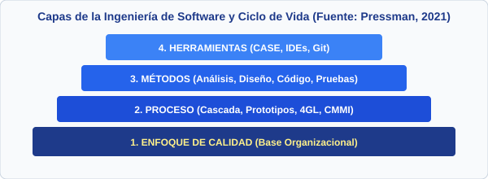

UNIDAD I. FUNDAMENTOS DE LA INGENIERÍA DE SOFTWARE Y DEL PROCESO
Estudio exhaustivo de las cuatro capas tecnológicas, la tecnología de procesos, las características singulares del producto software frente al hardware, los mitos de gestión/cliente/desarrollo, el marco común de proceso, los 5 niveles CMMI, los modelos de proceso (Cascada, Prototipos, 4GL y panorama comparativo) y la ingeniería de sistemas e información (PEI, BAA y arquitectura Hatley-Pirbhai).
1.1 Introducción a la Ingeniería de Software: conceptos, procesos, métodos y herramientas
La Ingeniería de Software se define formalmente (según el estándar IEEE y Roger S. Pressman) como la aplicación de un enfoque sistemático, disciplinado y cuantificable al desarrollo, operación y mantenimiento del software; es decir, la aplicación de la ingeniería al software. Fritz Bauer la definió como «el establecimiento y uso de principios de ingeniería robustos orientados a obtener económicamente software que sea fiable y que funcione de manera eficiente sobre máquinas reales».
Las Cuatro Capas de la Ingeniería de Software
La ingeniería de software es una tecnología multicapa en la que cada nivel descansa sobre el anterior; si falla uno de los niveles inferiores, las capas superiores pierden eficacia:
- 1. Enfoque de calidad (El cimiento): Cualquier enfoque de ingeniería debe sustentarse sobre un compromiso organizacional con la calidad total (Total Quality Management — TQM) y la filosofía de mejora continua (Kaizen). Sin disciplina de calidad, el resto de las capas carece de base sólida.
- 2. Capa del Proceso: Es el pegamento que mantiene unidas las capas tecnológicas y permite un desarrollo racional y oportuno. Define el marco de trabajo con las áreas clave de proceso (KPA) para establecer los hitos, productos entregables (documentos, modelos, código, datos), puntos de control de calidad y gestión de cambios.
- 3. Capa de los Métodos: Proporcionan el «cómo» técnico para construir el software. Abarcan una amplia gama de tareas que incluyen comunicación con el cliente, análisis y modelado de requisitos, diseño de estructuras de datos y arquitectura, construcción de programas, pruebas de verificación y mantenimiento.
- 4. Capa de las Herramientas: Suministran un soporte automatizado o semiautomatizado para el proceso y para los métodos. Cuando las herramientas se integran de modo que la información creada por una herramienta puede ser utilizada directamente por otra, se establece un sistema CASE (Computer-Aided Software Engineering — Ingeniería de Software Asistida por Computadora).
| Capa Tecnológica | Pregunta Fundamental que Responde | Ejemplos en un Proyecto Real |
|---|---|---|
| 1. Compromiso de Calidad | ¿Qué estándar de excelencia guía a la organización? | Cultura de cero defectos, ISO 9001, mejora continua PDCA. |
| 2. Proceso | ¿Qué actividades debemos realizar y en qué orden? | Modelo en cascada, prototipos, incremental, espiral o Scrum. |
| 3. Métodos | ¿Cómo se ejecuta técnicamente cada actividad? | Análisis estructurado (DER, DFD, DTE), diseño modular, pruebas McCabe. |
| 4. Herramientas | ¿Con qué software automatizamos y reducimos errores? | Entornos CASE, Visual Studio, SQL Server, Git/GitHub, analizadores estáticos. |
Tecnología de Procesos
La tecnología de procesos consiste en herramientas automatizadas que ayudan a una organización a analizar su proceso actual, organizar sus tareas de trabajo, controlar y supervisar el avance y gestionar la calidad técnica. Permite pasar de un proceso «en la cabeza de las personas» a un flujo formalmente modelado, medible y repetible (vinculado a los niveles superiores del CMMI).

Figura 1.1: Las 4 capas de la Ingeniería de Software. Fuente: Adaptado de Pressman, R. S. (2021), Ingeniería del software: Un enfoque práctico.
KittingBD), normalización 3FN y pruebas de valores límite; y las Herramientas utilizadas son .NET MAUI / C#, SQL Server y Git.
- Las 4 capas en orden ascendente: Calidad → Proceso → Métodos → Herramientas (CASE).
- El Proceso define el qué y cuándo; los Métodos definen el cómo técnico; las Herramientas brindan automatización.
Video Explicativo del Tema 1.1
Fuente del video: Canal Informático / YouTube Educación — https://www.youtube.com/watch?v=fXBG8ZAaBKI
1.2 El producto y el proceso del software
¿Qué es formalmente el Producto Software?
El software es un elemento lógico (no físico) integrado por tres componentes inseparables:
- Instrucciones (programas de computadora): que al ejecutarse proporcionan las características, función y grado de rendimiento deseados.
- Estructuras de datos: que permiten a los programas manipular adecuadamente la información tanto en memoria como en bases de datos.
- Documentos: que describen la arquitectura, la operación y el uso de los programas (especificaciones, manuales técnicos y de usuario).
Tres Características que Distinguen al Software del Hardware
- 1. El software se desarrolla o se diseña; no se fabrica en el sentido clásico: En el hardware los costos se concentran en la línea de ensamblaje y materias primas; en el software todo el costo radica en la ingeniería y el diseño intelectual, ya que producir copias adicionales tiene costo prácticamente nulo.
- 2. El software no se «desgasta», pero sí se deteriora: El hardware sigue la llamada curva de la bañera (alta tasa de fallos infantiles al inicio, tasa baja durante su vida útil, y subida final por desgaste físico debido al polvo, vibración o calor). El software no es susceptible a los males ambientales que desgastan al hardware; sin embargo, durante su vida sufre múltiples cambios (mantenimiento). Cada cambio introduce la probabilidad de inyectar nuevos defectos, provocando picos en la tasa de fallos que deterioran progresivamente su estructura interna.
- 3. Aunque la industria tiende al ensamblaje de componentes, la mayoría del software aún se construye a medida: A diferencia de los circuitos electrónicos estandarizados con catálogos globales de repuestos, gran parte del software corporativo se diseña a la medida de las reglas de negocio de cada cliente.
Las 8 Categorías de Aplicaciones de Software
- Software de sistemas: Programas escritos para dar servicio a otros programas (sistemas operativos, compiladores, controladores de red).
- Software de tiempo real: Mide, analiza y controla sucesos del mundo real conforme ocurren, con tiempos de respuesta estrictamente acotados (milisegundos).
- Software de gestión / negocios: Procesamiento de información comercial (nóminas, cuentas por cobrar, inventarios, puntos de venta, ERP).
- Software de ingeniería y científico: Caracterizado por algoritmos de cálculo numérico pesado («devoradores de números», CAD, simuladores físicos o astronómicos).
- Software empotrado (embebido): Reside en la memoria interna de un producto industrial o de consumo para controlar sus funciones (frenos ABS de un vehículo, microondas, marcapasos).
- Software de computadoras personales: Procesadores de texto, hojas de cálculo, diseño gráfico y entretenimiento.
- Software basado en Web (WebApps): Sistemas ejecutados desde navegadores e interconectados en la nube.
- Software de inteligencia artificial: Sistemas expertos, reconocimiento de patrones, redes neuronales artificiales y procesamiento de lenguaje natural.
La Crisis del Software y los Mitos (Gestión, Cliente y Profesionales)
Desde finales de los años 60 se acuñó el término crisis del software (o «aflicción crónica») para describir proyectos que superan su presupuesto, se entregan tarde y presentan baja calidad. Gran parte de estos problemas nace de creer en falsos mitos:
| Tipo de Mito | Creencia Errónea (Mito) | Realidad en Ingeniería de Software |
|---|---|---|
| Mito de Gestión | «Si nos atrasamos en el calendario, podemos añadir más programadores y recuperar el tiempo». | Ley de Brooks: Añadir más personas a un proyecto de software retrasado solo lo retrasará más, debido al tiempo invertido en capacitar a los nuevos y al crecimiento cuadrático de los canales de comunicación. |
| Mito de Gestión | «Ya tenemos un libro lleno de estándares y procedimientos; eso garantiza calidad». | ¿El libro realmente se usa o está empolvado? Los estándares solo funcionan si reflejan la práctica moderna y el equipo los aplica a diario. |
| Mito del Cliente | «Una declaración general de los objetivos basta para comenzar a escribir código; los detalles los vemos después». | Una definición inicial pobre es la principal causa de fracaso. Es indispensable una comunicación continua y formalizar los requisitos desde el inicio. |
| Mito del Cliente | «Los requisitos cambian continuamente, pero los cambios se asimilan fácil porque el software es flexible». | El costo de un cambio crece exponencialmente según la fase: 1x durante el análisis, de 1.5x a 6x durante el desarrollo, y de 60x a 100x cuando el software ya está en producción. |
| Mito del Profesional | «Una vez que escribimos el programa y hacemos que funcione, nuestro trabajo ha terminado». | Los datos de la industria demuestran que entre el 60% y el 80% de todo el esfuerzo invertido en un programa ocurre después de que se entrega al cliente por primera vez (etapa de mantenimiento). |
| Mito del Profesional | «Hasta que no tenga el programa corriendo no tengo forma de evaluar su calidad». | Las Revisiones Técnicas Formales (RTF) aplicadas desde el análisis y el diseño son filtros de calidad incluso más efectivos que las pruebas de ejecución para encontrar defectos temprano. |
El Proceso del Software y los 5 Niveles del Modelo CMM / CMMI (SEI)
Un proceso de software establece un marco común de trabajo integrado por 5 actividades estructurales (Comunicación, Planeación, Modelado, Construcción y Despliegue) apoyadas por actividades sombrilla o de protección que se aplican durante todo el proyecto: seguimiento y control, gestión de riesgos, aseguramiento de calidad (SQA), revisiones técnicas formales, medición, gestión de la configuración (GCS) y reutilización.
El Software Engineering Institute (SEI) desarrolló el Modelo de Madurez de Capacidad (CMM / CMMI) para calificar la madurez del proceso de una organización en 5 niveles:
| Nivel CMMI | Nombre del Nivel | Características del Proceso en la Organización |
|---|---|---|
| Nivel 1 | Inicial | El proceso de software es ad hoc e incluso caótico. Pocos procesos están definidos y el éxito depende del esfuerzo individual heroico. |
| Nivel 2 | Repetible (Gestionado) | Se establecen procesos básicos de gestión de proyectos para dar seguimiento al costo, al calendario y a la funcionalidad. Se puede repetir el éxito en proyectos similares. |
| Nivel 3 | Definido | El proceso de software tanto para gestión como para ingeniería está documentado, estandarizado e integrado en un proceso estándar para toda la organización. |
| Nivel 4 | Gestionado Cuantitativamente | Se recopilan medidas detalladas del proceso y de la calidad del producto. Tanto el proceso como los productos se comprenden y controlan estadísticamente. |
| Nivel 5 | Optimizado | La mejora continua del proceso se logra mediante la retroalimentación cuantitativa del propio proceso y la introducción planificada de ideas y tecnologías innovadoras. |
Video Explicativo del Tema 1.2
Fuente del video: Ingeniería de Software Académica — https://www.youtube.com/watch?v=JM_1zpd5E44
1.3 Modelos del proceso de software: Lineal secuencial, Construcción de prototipos y Técnicas de 4ª generación
Un modelo de proceso (o paradigma de ingeniería de software) es una estrategia prescriptiva elegida según la naturaleza del proyecto y de la aplicación, los métodos y herramientas a utilizar, y los controles y entregas que se requieren.
1. El Modelo Lineal Secuencial (Ciclo de Vida Clásico o en Cascada)
Propuesto originalmente por Winston Royce, sugiere un enfoque sistemático y estrictamente secuencial en el que la salida documentada de una etapa constituye la entrada de la siguiente:
- Ingeniería y modelado de sistemas/información: Como el software siempre forma parte de un sistema mayor, primero se establecen los requisitos de todos los elementos del sistema y luego se asigna un subconjunto de estos requisitos al software.
- Análisis de los requisitos del software: El proceso de recopilación se centra e intensifica especialmente en el software para comprender el dominio de la información, la función requerida, el comportamiento, el rendimiento y la interconexión. Se documenta y se revisa con el cliente.
- Diseño: Proceso de múltiples pasos que se enfoca en cuatro atributos distintos del programa: la estructura de datos, la arquitectura del software, las representaciones de la interfaz y el detalle procedimental (algoritmos). Traduce los requisitos en una representación evaluable antes de que comience la codificación.
- Generación de código: El diseño debe traducirse en una forma legible por la máquina. Si el diseño se realiza de manera detallada, la codificación puede llevarse a cabo de forma casi mecánica.
- Pruebas: Se centran en los aspectos lógicos internos del software (caja blanca) y en los dominios funcionales externos (caja negra) para descubrir errores y asegurar que una entrada definida produzca resultados reales que concuerden con los requeridos.
- Mantenimiento: El software indudablemente sufrirá cambios después de ser entregado al cliente (debido a errores no detectados, adaptación a un nuevo sistema operativo o periférico, o porque el cliente requiere ampliaciones funcionales). El mantenimiento vuelve a aplicar cada una de las fases precedentes a un programa ya existente.
Por qué se critica el modelo lineal: (a) Los proyectos reales rara vez siguen el flujo secuencial propuesto; (b) Es difícil para el cliente establecer todos los requisitos explícitamente al principio; (c) El cliente debe tener mucha paciencia porque no existirá una versión operativa hasta etapas muy avanzadas del proyecto; y (d) Genera «estados de bloqueo» en los que algunos miembros del equipo deben esperar a que otros terminen tareas dependientes.
2. El Modelo de Construcción de Prototipos
Ocurre con frecuencia que un cliente define un conjunto de objetivos generales para el software, pero no identifica los requisitos detallados de entrada, procesamiento o salida. En estos casos, el paradigma de construcción de prototipos ofrece el mejor enfoque mediante cinco pasos iterativos:
- Recolección y refinamiento de requisitos: Desarrollador y cliente se reúnen y definen los objetivos globales del software, identificando qué requisitos son conocidos y qué áreas necesitan mayor definición.
- Diseño rápido: Se centra en una representación de aquellos aspectos del software que serán visibles para el usuario/cliente (por ejemplo, enfoques de entrada y formatos de pantallas de salida).
- Construcción del prototipo: El diseño rápido lleva a la creación de un prototipo funcional inicial.
- Evaluación del prototipo por el cliente: El cliente prueba el prototipo y lo utiliza para refinar los requisitos del software que se desarrollará.
- Refinamiento iterativo: Se produce un proceso iterativo en el que el prototipo es «afinado» para satisfacer las necesidades del cliente, permitiendo al mismo tiempo que el desarrollador comprenda mejor lo que se necesita hacer.
3. Técnicas de Cuarta Generación (4GL / 4GT)
El término Técnicas de Cuarta Generación (4GT) abarca un amplio espectro de herramientas de software que tienen algo en común: facilitan al ingeniero del software la especificación de alguna característica del software a alto nivel, tras lo cual la herramienta genera automáticamente el código fuente basándose en la especificación del técnico. Incluye lenguajes no procedimentales para consulta de bases de datos (SQL), generación de informes, manipulación de datos, interacción y definición de pantallas, y capacidades gráficas de alto nivel.
Fases del paradigma 4GT: (1) Recopilación de requisitos; (2) Estrategia de diseño (indispensable para sistemas grandes, aun usando 4GL); (3) Implementación usando un lenguaje de 4ª generación; y (4) Prueba, documentación y transición a producción.
Panorama Comparativo de Todos los Modelos de Proceso
| Modelo de Proceso | Idea Central | Cuándo Conviene Aplicarlo |
|---|---|---|
| Lineal Secuencial (Cascada) | Fases en orden secuencial estricto; cada una cierra antes de iniciar la siguiente. | Requisitos estables, normativos y bien comprendidos desde el inicio. |
| Construcción de Prototipos | Maqueta funcional rápida para descubrir y validar requisitos junto con el usuario. | Cuando los objetivos son generales pero los detalles de interfaz o reglas son difusos. |
| Técnicas de 4ª Generación (4GL) | Especificación no procedimental de alto nivel con generación automática de código. | Sistemas de información pequeños o medianos centrados en reportes y bases de datos. |
| DRA / RAD (Desarrollo Rápido) | Ciclos ultracortos de 60 a 90 días con equipos en paralelo y componentes reutilizables. | Sistemas de información modulables con alcance bien acotado y plazos muy cortos. |
| Modelo Incremental | Combina el lineal con prototipos entregando el sistema por incrementos (primero el producto núcleo). | Cuando es prioritario entregar el núcleo operativo rápido o hay poco personal al inicio. |
| Modelo en Espiral (Boehm) | Iterativo evolutivo que incorpora análisis explícito de riesgos en cada vuelta de la espiral. | Sistemas de gran escala, complejos y con altos riesgos técnicos o financieros. |
| Desarrollo Basado en Componentes | Ensambla aplicaciones a partir de bibliotecas de componentes de software preempaquetados (COTS). | Cuando existen componentes reutilizables probados en el dominio de la organización. |
| Métodos Formales | Especificación matemática rigurosa y demostración formal de corrección libre de ambigüedad. | Sistemas críticos para la vida humana (aviación, reactores nucleares, equipos médicos). |
| Marcos Ágiles (Scrum / XP) | Iteraciones cortas (Sprints de 1 a 4 semanas), entrega continua y adaptación al cambio. | Proyectos dinámicos donde los requisitos del negocio evolucionan constantemente. |
Video Explicativo del Tema 1.3
Fuente del video: TodoCode / YouTube Educación — https://www.youtube.com/watch?v=3d9hCL8Nn0E
1.4 Ingeniería de sistemas e ingeniería de la información
La Ingeniería de Sistemas es una actividad interdisciplinaria que precede a la ingeniería de software, pues el software nunca opera en el vacío sino dentro de un sistema basado en computadora integrado por seis elementos que interactúan para transformar información:
- Software: Programas de computadora, estructuras de datos y su documentación.
- Hardware: Dispositivos electrónicos que proporcionan capacidad de cálculo y dispositivos electromecánicos (sensores, motores, lectores) que interactúan con el mundo exterior.
- Personas (Usuarios y operadores): Quienes interactúan con el hardware y el software.
- Bases de datos: Grandes colecciones organizadas de información a las que se accede mediante el software.
- Documentación: Manuales, impresos y material descriptivo que retrata el uso y operación del sistema.
- Procedimientos: Pasos que definen el uso específico de cada elemento del sistema o el contexto de negocio en que reside.
1. Jerarquía de la Ingeniería de Sistemas (Las 4 Visiones)
La ingeniería de sistemas abarca una colección de métodos «de arriba hacia abajo» (top-down) que refinan el problema a través de cuatro visiones sucesivas:
- Visión del Mundo (VM): Examina los dominios de negocio o tecnología de más alto nivel para establecer qué sistemas deben construirse.
- Visión del Dominio (VD): Se enfoca en un área específica de interés (por ejemplo, manufactura, finanzas o control vehicular) y los datos/funciones que la componen.
- Visión de los Elementos (VE): Identifica cada elemento concreto del sistema (hardware, software, personas, base de datos) y le asigna sus responsabilidades funcionales.
- Visión Detallada (VDet): Desarrolla los modelos técnicos detallados de diseño e implementación de cada elemento asignado.
Al construir modelos del sistema en cada visión, el ingeniero debe explicitar los supuestos (que reducen el número de permutaciones posibles), las simplificaciones (que permiten crear el modelo en tiempo razonable), las limitaciones (que ayudan a acotar las fronteras del sistema) y las preferencias (que indican la arquitectura preferida por el cliente).
2. Ingeniería de la Información (IE — James Martin) y Planificación de la Estrategia de Información (PEI)
Cuando el contexto del sistema a desarrollar es toda una empresa comercial o institución, se aplica la Ingeniería de la Información (IE) propuesta por James Martin, la cual trata los datos corporativos como un recurso estratégico y se divide en cuatro fases piramidales:
- Fase 1 — Planificación de la Estrategia de Información (PEI): Contempla a toda la empresa como una entidad global. Define las metas y objetivos estratégicos del negocio, identifica los Factores Críticos de Éxito (FCE), levanta el modelo de datos empresarial a nivel de entidades corporativas (Cliente, Producto, Orden, Empleado) y construye matrices de relación entre funciones del negocio y entidades de datos. Su resultado es una Arquitectura de Información tripartita: Arquitectura de Datos, Arquitectura de Aplicaciones e Infraestructura Tecnológica.
- Fase 2 — Análisis del Área de Negocio (AAN / BAA): Una vez priorizadas las áreas en la PEI, se selecciona un área o departamento específico (ej. Control de Calidad, Inventarios o Recursos Humanos) y se modela con detalle su información (mediante diagramas Entidad-Relación) y sus flujos de transformación (mediante diagramas de descomposición de procesos y flujo de datos), cruzándolos en matrices CRUD (Create, Read, Update, Delete) para aislar exactamente qué sistemas de software requiere esa área.
- Fase 3 — Diseño del Sistema: Traduce los requisitos aislados en el BAA al diseño de bases de datos y programas.
- Fase 4 — Construcción e Implantación: Codificación, pruebas y puesta en marcha.
3. Ingeniería de Productos y Arquitectura del Sistema (Modelo de Hatley y Pirbhai)
Cuando el contexto del trabajo es la construcción de un producto comercial o industrial (un automóvil inteligente, un teléfono móvil, un robot médico), se aplica la Ingeniería de Productos. Sus pasos son: obtención de requisitos del cliente, análisis de viabilidad (económica, técnica, legal y de alternativas), asignación de funciones entre hardware/software/personas, y el Modelado de la Arquitectura del Sistema.
El método de Hatley y Pirbhai representa cualquier sistema basado en computadora usando una plantilla genérica de arquitectura formada por cinco regiones o procesadores: (1) Procesamiento de interfaz de usuario, (2) Procesamiento de entrada, (3) Función y control del sistema, (4) Procesamiento de salida, y (5) Mantenimiento y autoprueba, documentados mediante tres diagramas fundamentales:
| Diagrama de Hatley-Pirbhai | Siglas | Propósito y Qué Representa en la Arquitectura del Sistema |
|---|---|---|
| Diagrama de Contexto de Arquitectura | ACD | Establece la frontera de información entre el sistema que se va a implementar (mostrado como un único nodo central) y el entorno externo en el que opera (entidades externas que producen o consumen información). |
| Diagrama de Flujo de Arquitectura | AFD | Refina el ACD mostrando los subsistemas principales dentro de las 5 regiones de la plantilla de arquitectura y los flujos de información y control que circulan entre dichos subsistemas. |
| Diagrama de Interconexión de Arquitectura | AID | Representa los medios físicos reales (buses de datos, canales de red, enlaces serie, pantallas, sensores) a través de los cuales se comunican físicamente los subsistemas del AFD. |
- 6 elementos de un sistema basado en computadora: Software, Hardware, Personas, Bases de datos, Documentación y Procedimientos.
- 4 visiones jerárquicas: Mundo → Dominio → Elementos → Detallada.
- Ingeniería de la Información (James Martin): PEI (toda la empresa) → BAA (un área de negocio) → Diseño → Construcción.
- Arquitectura de sistemas (Hatley-Pirbhai): ACD (contexto), AFD (flujo lógico entre subsistemas) y AID (interconexión física).
Video Explicativo del Tema 1.4
Fuente del video: Cátedra de Ingeniería de Sistemas — https://www.youtube.com/watch?v=UUsNCcoM3e4
Autoevaluación Interactiva de la Unidad I
Responde las siguientes 5 preguntas sobre los temas 1.1 a 1.4 para verificar tu aprendizaje: